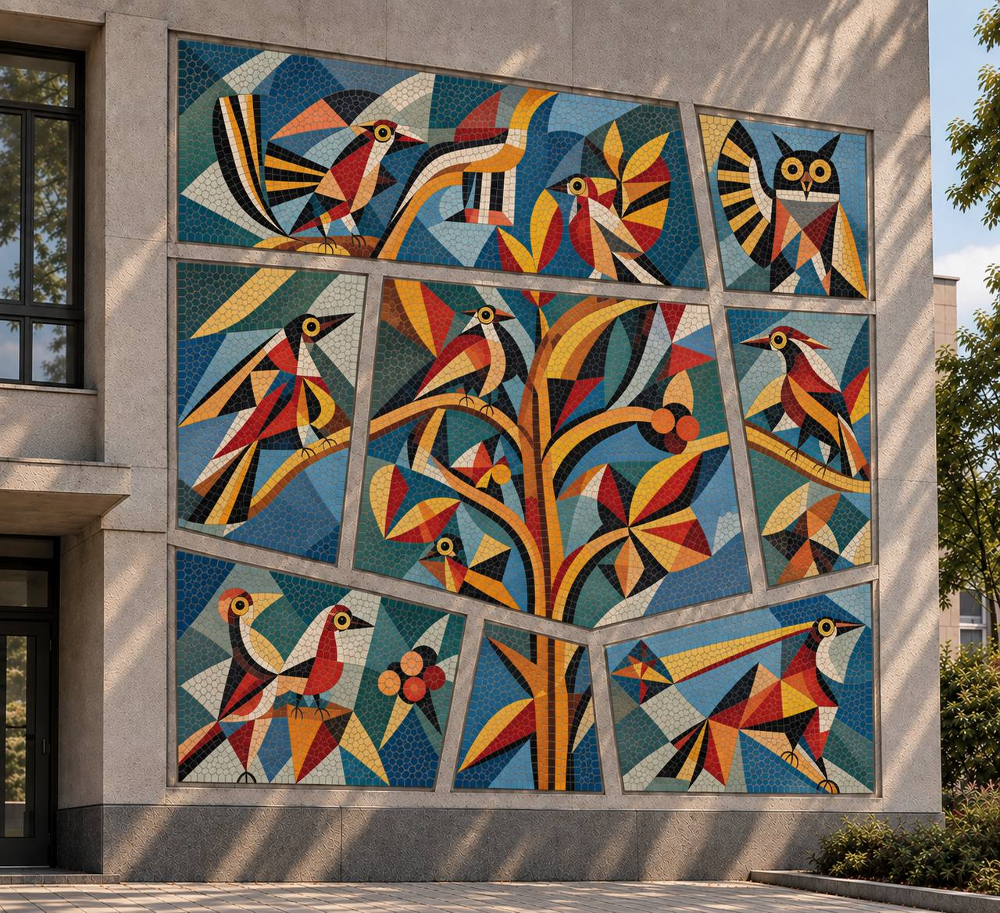

Дополненная реальность
Оживите птиц на мозаике
- Отсканируйте QR-код камерой телефона
- Нажмите «Оживить птиц» и разрешите доступ к камере
- Наведите телефон на мозаику — и смотрите, как птицы просыпаются. Коснитесь птицы, и она вылетит

Дополненная реальность